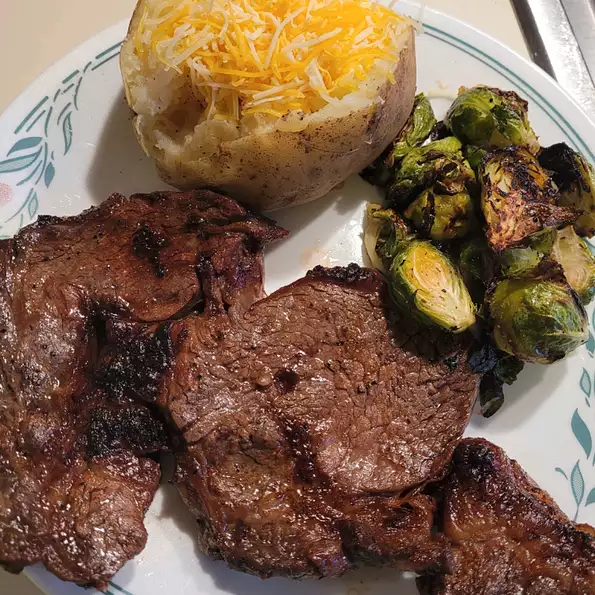

Steak Recipe

The key to a juicy steak is cook it FROZEN.
Ingredients
- 1 tablespoon butter
- 1 (1/2 pound) frozen Delmonico (rib-eye) steak
- 1 tablespoon Worcestershire sauce, or to taste
- 1 teaspoon meat tenderizer
- 1 clove garlic, minced
- salt and black pepper to taste
Steps
- Preheat your oven's broiler. Spread half of the butter on top of the frozen steak. Pour Worcestershire sauce over, and sprinkle liberally with meat tenderizer, garlic, salt and pepper.
- Place steak on a roasting pan. Broil for 6 to 8 minutes, remove steak from the oven, and flip over. Spread butter and season just like the other side. Return to the broiler, and continue cooking for 6 to 8 minutes, or to desired doneness.